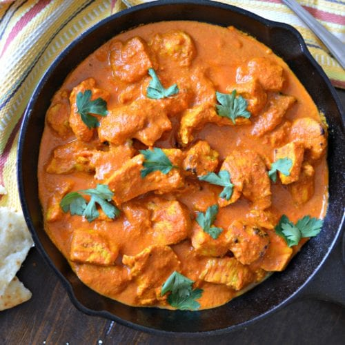

Chicken tikka masala

Ingredients
For the chiken marinade:
- 28 oz (800g) boneless and skinless chicken thighs cut into bite-sized pieces
- 1 cup plain yogurt
- 1 1/2 tablespoons minced garlic
- 1 tablespoon ginger
- 2 teaspoons garam masala
- 1 teaspoon turmeric
- 1 teaspoon ground cumin
- 1 teaspoon Kashmiri chili (or 1/2 teaspoon ground red chili powder)
- 1 teaspoon of salt
For the sauce:
- 2 tablespoons of vegetable/canola oil
- 2 tablespoons butter
- 2 small onions (or 1 large onion) finely diced
- 1 1/2 tablespoons garlic finely grated
- 1 tablespoon ginger finely grated
- 1 1/2 teaspoons garam masala
- 1 1/2 teaspoons ground cumin
- 1 teaspoon turmeric powder
- 1 teaspoon ground coriander
- 14 oz (400g) tomato puree (tomato sauce/Passata)
- 1 teaspoon Kashmiri chili (optional for colour and flavour)
- 1 teaspoon ground red chili powder (adjust to your taste preference)
- 1 teaspoon salt
- 1 1/4 cups of heavy or thickened cream (use evaporated milk for lower calories)
- 1 teaspoon brown sugar
- 1/4 cup water if needed
- 4 tablespoons Fresh cilantro or coriander to garnish